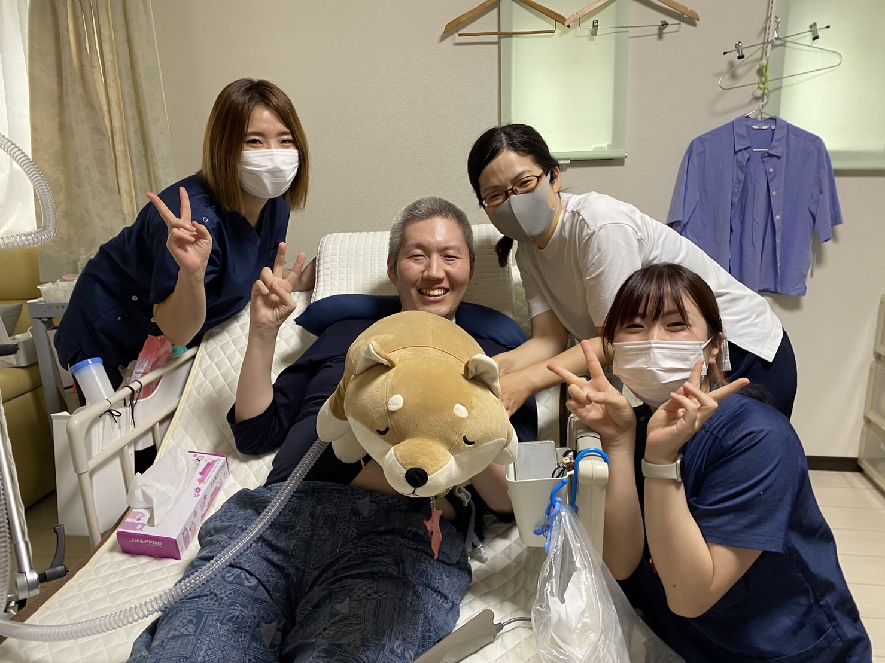
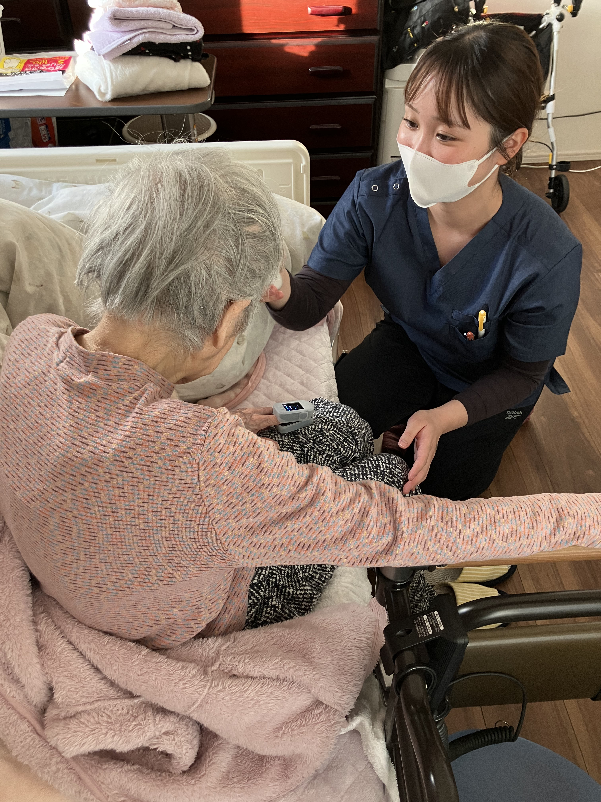
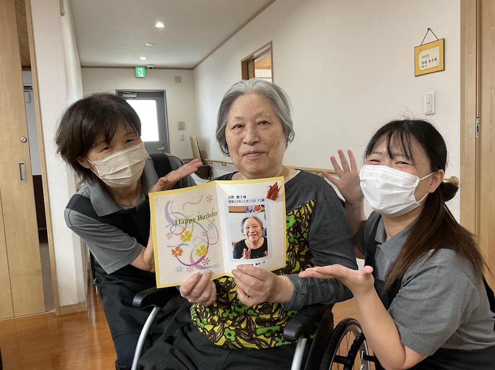
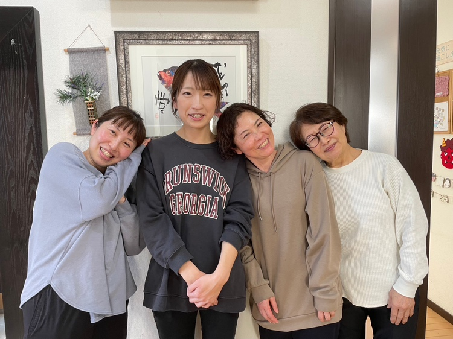
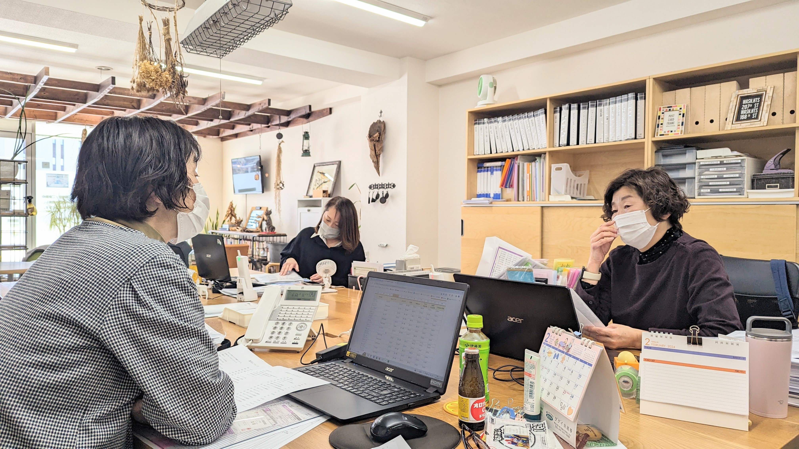
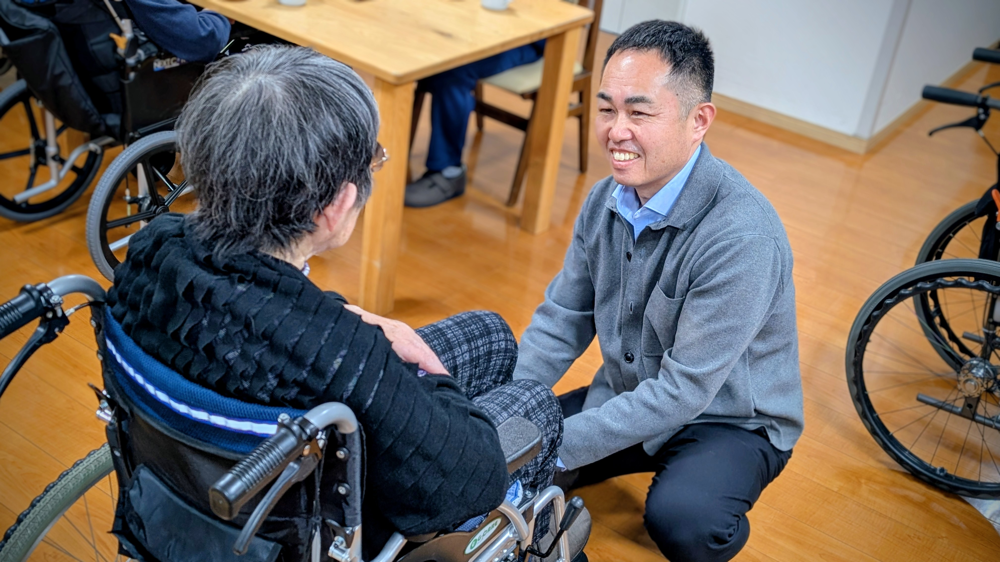
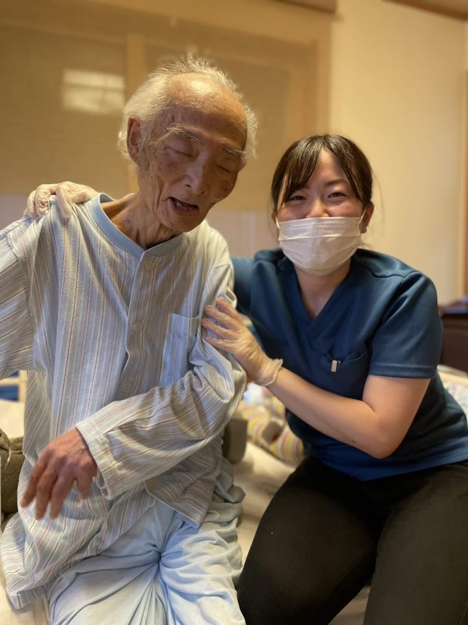
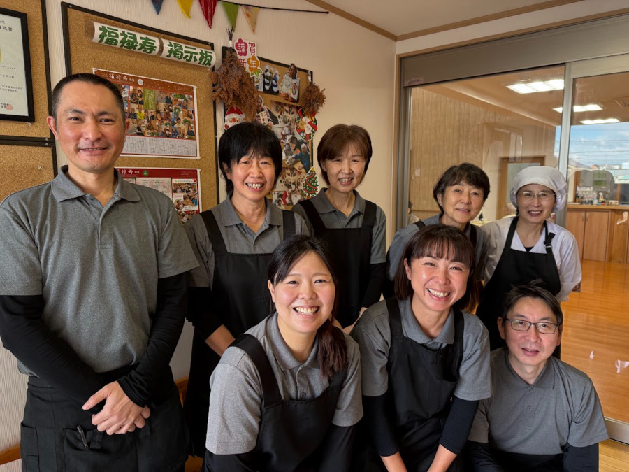

埼玉県越谷市・千葉県流山市で展開する地域密着の総合福祉グループ。
訪問看護、高齢者住宅、デイサービス、居宅介護支援、福祉用具など、あなたの資格や希望するライフスタイルに合わせた多彩な活躍のステージがあります。

スタッフ一人ひとりが心にゆとりを持って働けるよう、環境づくりに妥協しません。
チーム制で業務を分担し、記録業務のデジタル化を推進。定時退社を徹底しており、子育てやご家族との時間、プライベートを大切にできます。
入社後は先輩スタッフがマンツーマンで丁寧に同行。「困った時はお互い様」の精神が根付いているので、ブランクのある方も安心してスタートできます。
看護、介護、ケアマネ、福祉用具がワンストップで揃っているため、多職種との相談や連携が極めてスムーズ。孤立せずチームで支え合えます。
厚労省が定める処遇改善・職場環境等要件（6区分）を満たし、手当支給や資格取得支援制度を完備。あなたの頑張りと成長をしっかり還元します。
各拠点で活躍するスタッフと、利用者様の温かな笑顔があふれる現場風景です。






ご自身の資格や希望の働き方に合わせて職種をお選びいただけます。
コパン訪問看護ステーション（流山）

ご利用者様のご自宅や併設高齢者住宅へ伺い、療養上のお世話や医療処置、リハビリテーションを行います。病院のように時間に追われることなく、1対1でじっくり信頼関係を築けるのが在宅看護の最大のやりがいです。未経験やブランクのある方も安心の同行研修を行っています。
| 給与 |
月給 320,000円 〜 400,000円 ※オンコール手当・資格手当・経験考慮別途支給 / 【パート】時給 2,000円〜 |
|---|---|
| 勤務地 | 千葉県流山市大字西平井 2-2 コージィコートナカムラ 101（流山支社内） |
| 勤務時間 | 08:30 〜 17:30（休憩60分 / 残業ほぼなし） ※パートは週1日・短時間から相談可 |
| 休日・休暇 | 完全週休2日制（土日祝休み相談可）、有給休暇、年末年始休暇、慶弔休暇 |
| 応募資格 | 正看護師、准看護師、または理学療法士（PT）の資格をお持ちの方（要普通免許） |
福禄寿（流山）/ 晴れる家（越谷）/ シルバーカレッジ（流山）

全20室のサ高住「福禄寿」や全9床の有料老人ホーム「晴れる家」、通所介護「シルバーカレッジ」での身体介護や生活支援、レクリエーション業務です。小規模施設ならではのアットホームな環境で、一人ひとりに寄り添う温かな個別ケアが実現できます。「日勤のみ」「夜勤専従」「扶養内パート」など柔軟に対応可能です。
| 給与 |
月給 240,000円 〜 310,000円 ※夜勤手当別途（1回 7,000円〜）、処遇改善手当支給 / 【パート】時給 1,150円〜1,350円 |
|---|---|
| 勤務地 |
・サービス付き高齢者向け住宅 福禄寿（流山市西平井 2-19-1） ・住宅型有料老人ホーム 晴れる家（越谷市花田 7-14-16） ・デイサービス シルバーカレッジ（流山市平和台 4-294-1） |
| 勤務時間 | シフト制（早番・日勤・遅番・夜勤） ※デイサービスは日勤のみ（08:30〜17:30） |
| 休日・休暇 | シフト制（月8〜9日休 / 年間休日110日程度）、有給休暇、希望休制度あり |
| 応募資格 | 無資格・未経験OK！（初任者研修・実務者研修・介護福祉士をお持ちの方優遇・資格手当あり） |
介護屋本舗 越谷（越谷駅徒歩3分）/ 介護屋本舗 流山
要介護認定の申請代行、ご利用者様・ご家族との面談、ケアプランの作成、関係機関との連絡調整を行います。越谷事業所には主任ケアマネジャーが4名在籍しており、一人で抱え込まずに何でも相談できる抜群のサポート体制が整っています。自社グループ内の看護・介護・用具との連携も極めてスムーズです。
| 給与 |
月給 280,000円 〜 350,000円 ※主任ケアマネ手当、資格手当、昇給・賞与あり |
|---|---|
| 勤務地 |
・越谷事業所: 埼玉県越谷市赤山町 1-57-1 Aテック秋山ビル 102（越谷駅西口徒歩3分） ・流山事業所: 千葉県流山市大字西平井 2-2 コージィコートナカムラ 101 |
| 勤務時間 | 08:30 〜 17:30（休憩60分 / 残業ほぼなし） |
| 休日・休暇 | 週休2日制（土日祝休み / 祝日営業時は平日振替）、有給休暇、年末年始休暇 |
| 応募資格 | 介護支援専門員（ケアマネジャー）資格をお持ちの方（主任ケアマネジャー歓迎） |
福祉用具貸与事業所 介護屋本舗（流山）
ケアマネジャーからのご依頼を受け、車椅子や介護ベッド、歩行器などの選定アドバイス、納品、定期点検、住宅改修（手すり取り付け等）のご相談対応を行います。飛び込み営業はなく、既存の連携先ケアマネジャー様へのルート対応が中心です。「生活環境を整えることで、利用者様の行動範囲が広がる」実感を味わえます。
| 給与 |
月給 235,000円 〜 300,000円 ※昇給・賞与あり、各種手当別途支給 |
|---|---|
| 勤務地 | 千葉県流山市大字西平井 2-2 コージィコートナカムラ 101（流山支社内） |
| 勤務時間 | 08:30 〜 17:30（休憩60分 / 残業月平均10h未満） |
| 休日・休暇 | 完全週休2日制（土日祝休み相談可）、有給休暇、年末年始休暇 |
| 応募資格 | 福祉用具専門相談員、介護福祉士等の有資格者（無資格の方も講習受講で取得支援可能！要普通免許） |
クローバーの職場環境や人間関係、仕事のやりがいについて語ってもらいました。
「まずは職場の雰囲気を見てみたい」「話だけ聞いてみたい」という気軽なご相談も大歓迎です。